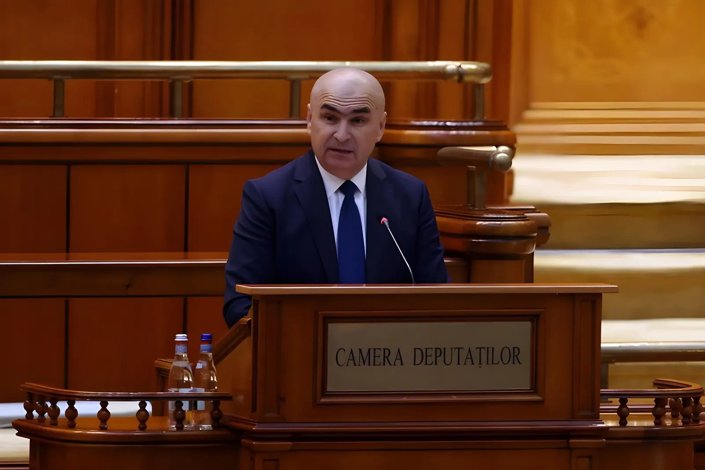

Le 5 mai 2026, le Parlement roumain renverse le gouvernement pro-européen d'Ilie Bolojan par 281 voix, grâce à une alliance inédite entre les sociaux-démocrates du PSD et l'extrême droite nationaliste de l'AUR. Cet acte s'inscrit dans une crise politique longue amorcée par l'annulation de la présidentielle de novembre 2024 et la montée du mouvement de George Simion, qui entend désormais peser sur la formation du prochain gouvernement.
Pour comprendre la chute de Bolojan, il faut remonter à novembre 2024. Le 24 novembre, lors du premier tour de l'élection présidentielle, le candidat indépendant Călin Georgescu, quasi inconnu quelques semaines plus tôt, arrive en tête avec environ 23 % des suffrages. Sa campagne, menée presque exclusivement sur TikTok, suscite immédiatement la controverse : des documents déclassifiés par la présidence roumaine font état d'une campagne de promotion coordonnée sur le réseau social, accompagnée d'accusations d'ingérence russe et de financement de campagne illégal via des influenceurs rémunérés.
Le 6 décembre 2024, la Cour constitutionnelle roumaine prend la décision inédite d'annuler l'intégralité du processus électoral présidentiel, invoquant des irrégularités graves et des violations de la législation électorale. Cette décision, qualifiée par certains observateurs de « nucléaire », plonge le pays dans une profonde incertitude démocratique.
De nouvelles élections présidentielles sont organisées en mai 2025. George Simion — leader de l'Alliance pour l'unité des Roumains (AUR), figure eurosceptique et souverainiste au style trumpiste — arrive en tête du premier tour avant d'échouer au second face au pro-européen Nicușor Dan, élu président de la République. Ilie Bolojan prend la tête du gouvernement en juin 2025, soutenu par une coalition de quatre partis pro-européens incluant le PSD.
Premier tour de la présidentielle : Călin Georgescu arrive en tête avec ~23 % malgré des sondages l'annonçant à moins de 5 %. Sa campagne TikTok suscite des accusations d'ingérence russe et de financement illégal.
La Cour constitutionnelle annule l'ensemble du processus électoral présidentiel, invoquant des violations graves de la législation électorale. La Commission européenne ouvre une enquête sur TikTok au titre du Digital Services Act.
Nouvelle présidentielle : George Simion (AUR) arrive en tête du 1er tour. Le pro-européen Nicușor Dan remporte le second tour. Georgescu, sous le coup d'une enquête, est interdit de se représenter.
Ilie Bolojan devient Premier ministre, à la tête d'une coalition pro-européenne incluant le PSD. Il annonce un plan d'austérité pour réduire le déficit public, le plus élevé de l'Union européenne.
Le PSD quitte la coalition gouvernementale, dénonçant la politique d'austérité de Bolojan jugée trop sévère pour les ménages roumains.
Le Parlement vote la censure : 281 voix contre 233 requises. Alliance PSD–AUR. Bolojan reste en fonctions en tant que Premier ministre intérimaire jusqu'à la formation d'un nouveau gouvernement, avec des pouvoirs limités.
Le vote du 5 mai repose sur une alliance de circonstance qui a surpris de nombreux observateurs. Le Parti social-démocrate (PSD), première force parlementaire avec 130 élus depuis les législatives de décembre 2024, s'est allié à l'Alliance pour l'unité des Roumains (AUR) de George Simion pour faire tomber le gouvernement. Le PSD a pris soin de préciser n'avoir « aucun accord politique post-motion » avec l'extrême droite, leur seul objectif commun étant le renversement de Bolojan.
Pour le politologue Costin Ciobanu, de l'université d'Aarhus, cette alliance révèle une « angoisse existentielle au sein du PSD » : le parti a vu une fraction croissante de son électorat populaire glisser vers l'AUR et cherche à reprendre la main sans savoir comment. En s'alliant à l'AUR, le PSD a contribué à légitimer une formation jusque-là ostracisée, qui dans les sondages de mai 2026 dépasse déjà le PSD avec 37 % d'opinions favorables.
La justification officielle de la censure tient à la politique économique du gouvernement. La Roumanie affiche un déficit public de 7,9 % du PIB au quatrième trimestre 2025 selon Eurostat — le plus élevé de l'Union européenne — et fait l'objet d'une procédure européenne pour déficit excessif depuis 2020. Pour respecter ses engagements européens et éviter la perte de fonds structurels, Bolojan avait introduit des mesures d'austérité touchant notamment les retraites anticipées et certaines prestations sociales. C'est précisément ces mesures que le PSD et l'AUR ont dénoncées comme une politique appauvrissant la population.
Sur les marchés, l'instabilité politique a eu des effets immédiats : à l'approche du vote, le leu roumain a touché un plus bas historique face à l'euro, et les taux d'emprunt souverains ont commencé à remonter, fragilisant encore davantage des finances publiques déjà sous pression.
| Acteur | Position | Rôle dans la crise |
|---|---|---|
| Ilie Bolojan | PM sortant (PNL) | Austérité, intérimaire post-censure |
| Nicușor Dan | Président de la République | Pro-UE, chargé de désigner un nouveau PM |
| George Simion | Chef de l'AUR | Moteur de la censure, réclame des élections anticipées |
| Sorin Grindeanu | Chef du PSD | Rupture de coalition, co-auteur de la censure |
| Călin Georgescu | Candidat 2024, exclu | Annulation présidentielle, enquête judiciaire en cours |
Le lendemain du vote, le président Nicușor Dan a écarté toute possibilité de gouvernement d'extrême droite ou d'élections anticipées réclamées par Simion. Il a annoncé l'ouverture de consultations avec les différentes forces politiques en vue de former un nouveau gouvernement. Selon Costin Ciobanu, le scénario le plus probable reste la reconduction d'une alliance des mêmes quatre partis pro-européens, mais avec un Premier ministre différent. Ces tractations s'annoncent longues dans un Parlement fracturé.
L'enjeu est de taille : si la crise politique persiste, la Roumanie risque de ne pas satisfaire aux exigences de la Commission européenne en matière de réduction du déficit, mettant en péril des milliards d'euros de fonds structurels. Le pays se situe par ailleurs aux avant-postes de l'OTAN depuis le début de la guerre en Ukraine — toute déstabilisation interne soulève des préoccupations géopolitiques au-delà de ses frontières.
La chute de Bolojan illustre un phénomène qui dépasse les frontières de la Roumanie : la montée de partis populistes qui prospèrent sur les fragilités économiques et institutionnelles des démocraties d'Europe de l'Est. En renversant un gouvernement qui tentait de remettre de l'ordre dans les finances publiques, le PSD et l'AUR ont choisi la tactique électoraliste à court terme. Mais ils ont surtout accéléré la normalisation de l'extrême droite, désormais incontournable dans le jeu politique roumain. Le vrai enjeu n'est plus seulement de former un nouveau gouvernement : c'est de savoir si les forces pro-européennes parviendront à répondre aux attentes sociales qui alimentent la montée de Simion — sans lui abandonner le terrain.